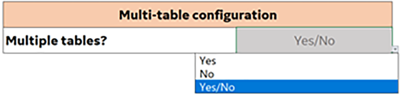
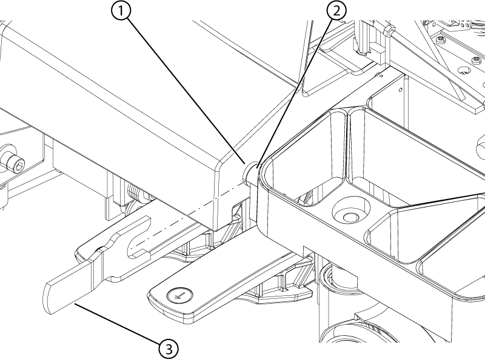
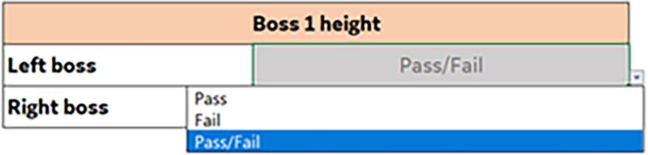
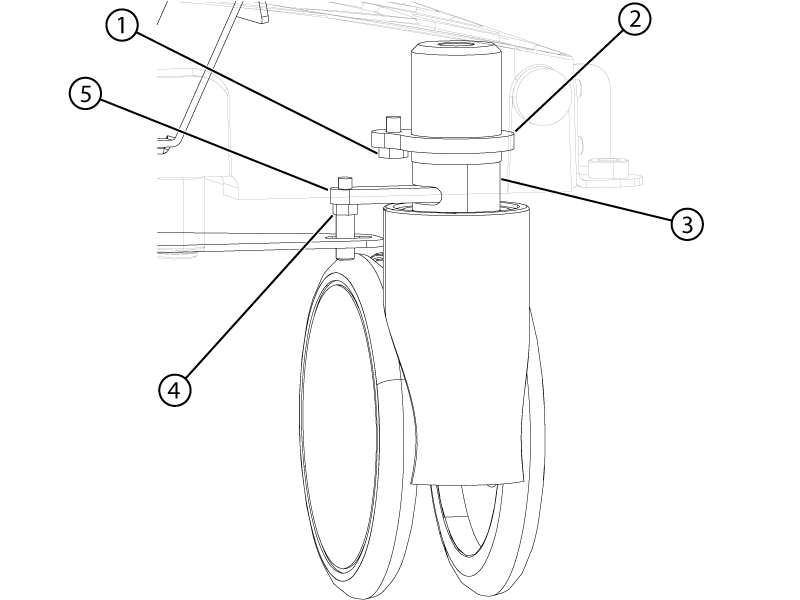
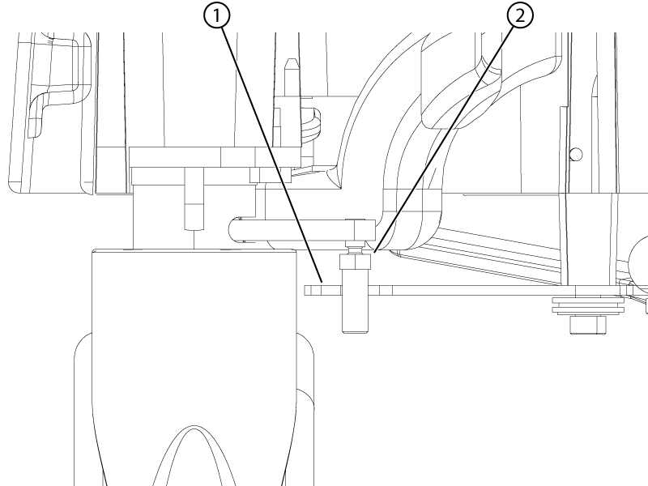
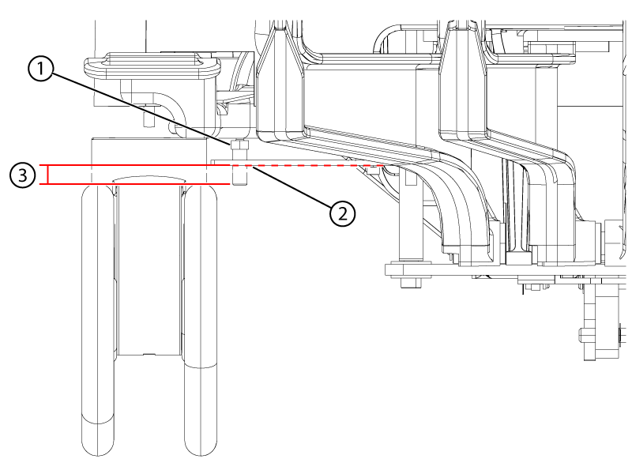
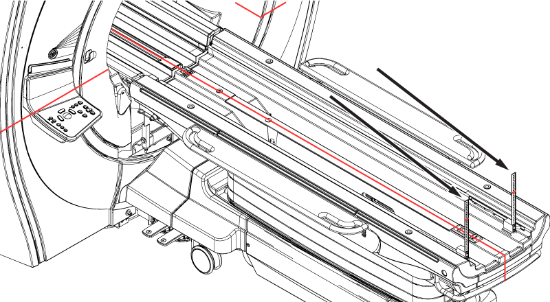
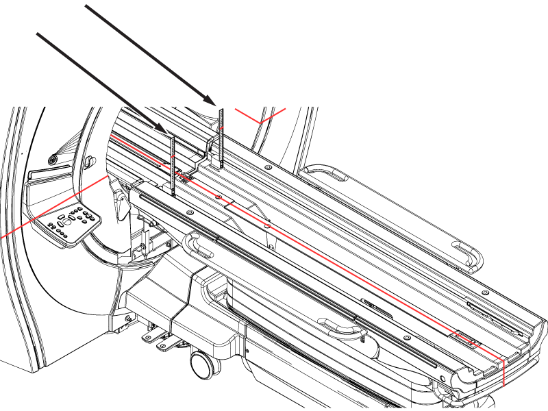
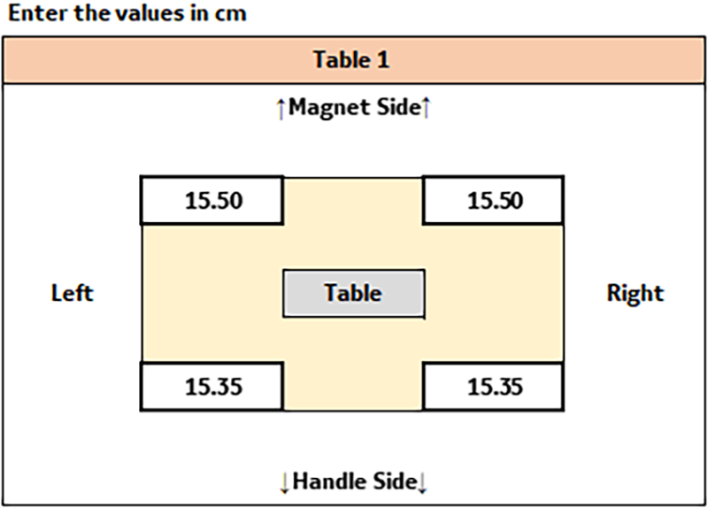

Measure the height of the dock bosses and patient table, make adjustments to the dock boss height if necessary, and note the measurements for entry in the macro tool.
Topic ID: task_mc3_qft_hlb
Multiple table configuration
Procedure
Select a response from the Multiple tables? drop-down menu in the macro tool. Select yes if the scanner has multiple tables and no if the scanner only has one table.
Figure 1. Multiple table selection

Topic ID: task_mfk_lnt_hlb
Boss 1 height
Procedure
Remove the front table covers and use the boss height gauge to check the height difference between the table and dock bosses. Make sure to slide the boss height gauge in from the side and that the gauge covers both bosses.
Note A missing front table cover, as shown in the illustration, may result in 16-channel systems reporting a 32-channel connector is not attached. When the adjustment is complete, replace the front cover to prevent this error.
Note The specification for the height difference between the table and dock bosses is less than 1 mm. If the boss height gauge does not slide over both bosses from the side, the bosses are outside of the specification.
Figure 2. Boss height alignment check

Item
Description
1
Dock boss
2
Table boss
3
Boss height gauge
If the boss height alignment is within specifications, select Pass from the drop-down menu in the macro tool. If the alignment is outside of specifications, select Fail from the drop-down in the macro tool.
Figure 3. Boss height alignment pass/fail drop-down

If the boss height alignment is outside of specification, adjust the front left and right casters until the boss heights are aligned within specification.
To adjust the casters:
Undock the table.
Engage the table brakes in the full lock position.
Remove the collar bolt from the collar of the caster.
Figure 4. Caster assembly

Item
Description
1
Collar bolt
2
Caster collar
3
Caster shaft
4
Caster linkage pin
5
Wheel lock lever
Remove the caster pin.
Rotate the entire caster assembly (make sure the threaded portion of the caster is rotating) clockwise or counterclockwise to raise or lower the caster and align the bosses to within specifications. Each caster turn is approximately 1.5 mm of height adjustment.
Rotating the caster clockwise, as viewed from the top, raises the table bosses.
Rotating the caster counterclockwise, as viewed from the top, lowers the table bosses.
Reinstall the collar lock nut and caster pin.
Make sure the nut portion of the caster pin is above the hook of the brake linkage plate.
Figure 5. Caster pin nut clearance

Item
Description
1
Brake linkage plate
2
Caster pin nut
Make sure the caster pin engagement with the brake linkage plate hook has enough contact area.
Figure 6. Caster pin engagement

Item
Description
1
Caster pin nut above the link plate
2
The plate may sag; lightly push the plate down to the lowest sag point
3
Minimum of 2 mm below the plate at its lowest point
If the nut portion of the caster pin is in the hook of the brake linkage plate or does not have enough engagement with the linkage plate, minimally adjust the caster.
Topic ID: task_isf_myt_hlb
Table 1
Procedure
Dock the table.
Use the vertical rulers and measure the height of the horizontal laser line at each of the four corners of the table approximately 6 cm in from the ends of the table. Make sure the rulers do not rest on the chamfered surfaces.
Figure 7. Vertical ruler location at the front of the table

Figure 8. Vertical ruler location at the rear of the table

Record the heights of the horizontal laser line on the vertical rulers in centimeters as they will be entered in the macro tool.
Note These are the values that are used to calculate the final table adjustment.
Figure 9. Sample table 1 height values in the macro tool

Topic ID: task_xgv_zzt_hlb
Multiple table configurations
Procedure
If a scanner has multiple tables, repeat Boss 1 height and Table 1 for table 2 in the tool.